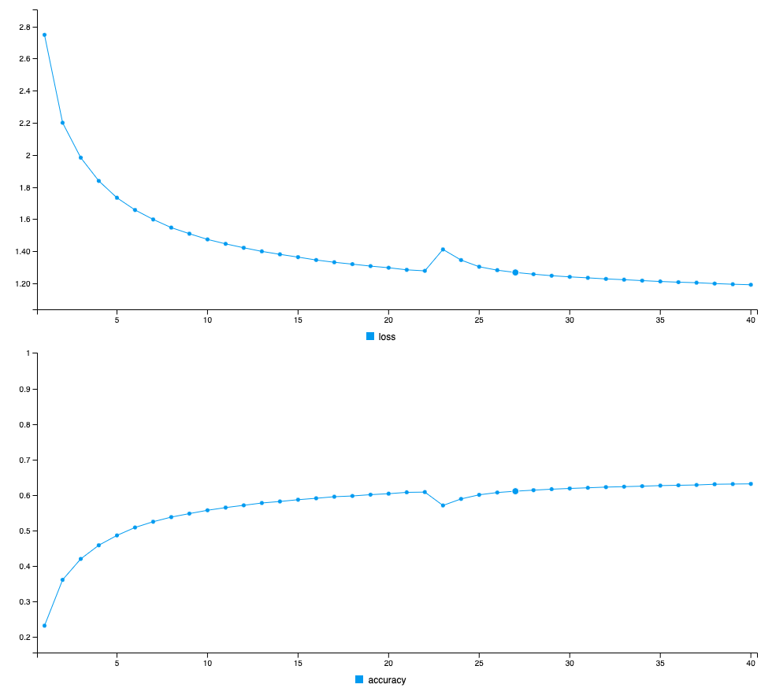

This week’s TidyTuesday data set is basically the script for all of the Avatar: The Last Airbender episodes. I thought it’d be neat to build a language model from the script and use it to generate new sentences that plausibly sound like they belong in the Avatar universe. In this post, I’ll quickly present some of the sentences generated from the model, and then I’ll dive into how I obtained those results.
Results
Here I show what the model generates based on the first 60 characters of the script, which are:
water. earth. fire. air. my grandmother used to tell me stor
All of the following paragraphs start the same, but have different “temperatures” set to affect how “creative” the sequences are. (More on temperature in the next section.) These passages are ordered by increasing “creativity” (“weirdness” might be a better adjective):
water. earth. fire. air. my grandmother used to tell me storing to the last the way to the statue who is standing up and standing on the statue who is standing on the shot catches the water and the ship. the scene cuts to a shot of the saddle. the camera pans to the statue who stands the statue. the camera pans to the large standing and the large still pull in the water and the scene cuts to a shot of the statue who standing and standing at the shot catche
water. earth. fire. air. my grandmother used to tell me storing interrupted by the tribe pun to the fire nation is the camera pans to the tribler the prove on the way to the statues and and the blue spirit whenging the water who is thrown and and the scene switches to a side-view of the ship on the ground, lit and the side of the right before close-up of the statue like the way like and the water. he approaches his back and close for a terchest make and so
water. earth. fire. air. my grandmother used to tell me storio his with the strang. pait of the fire nation gainatenes appa’s ready whate a lard off him to save to gladleg, but if unhake. it starts her lind cheer all the way provely. sokka grab. appa revealing moos tides an and path a few curious chance from shoke him. the cruff. his cloti wivelition to the call aang the river, roke vines a mashes tomorement with a hore it toward. the water a and him flase
water. earth. fire. air. my grandmother used to tell me stortel over his misting frog honor with the group his uncle twithing understames sokka. [close-up.she midenct in aang, switche. aang’s belaps out other and onmack laufly. follojes, making the leggrously.] ne! wo ohan’s perfort’s a changing.jumps a finors, don’t have a dirk.[glans.]yoo didn’t menn toges up! [she eldsyles exactunting to slowly.] any the times? i don’t be fry to gomp,[working something
The results here aren’t wonderful. They’re based on a language model with ~60% accuracy. There’s definitely room for improvement. I could train the model longer, play with the hyperparmeters, and try to get more of the data loaded into the model. (As you’ll see, I couldn’t train on the entire dataset because it was too big.) Still, I’m pretty happy with these results, as this is my first go at using the keras to R interface and I spent quite a bit of time getting all of this working on a cloud VM. Hopefully, the next tidy Tuesday deep learning project will have more interesting results.
Method
I built the model on a Google Cloud VM running RStudio w/ 30GB of RAM and a Nvidia K80 GPU. Training took about 15 minutes. It wasn’t possible to really do this on my macbook. One epoch was going to take 5 minutes. On the VM, it took 30 seconds. Much better for iterating quickly.
First, download the Tidy Tuesday dataset:
library(tidyverse)
library(stringr)
library(keras)
avatar <- readr::read_csv('https://raw.githubusercontent.com/rfordatascience/tidytuesday/master/data/2020/2020-08-11/avatar.csv')
glimpse(avatar)## Rows: 13,385
## Columns: 11
## $ id <dbl> 1, 2, 3, 4, 5, 6, 7, 8, 9, 10, 11, 12, 13, 14, 15, 16…
## $ book <chr> "Water", "Water", "Water", "Water", "Water", "Water",…
## $ book_num <dbl> 1, 1, 1, 1, 1, 1, 1, 1, 1, 1, 1, 1, 1, 1, 1, 1, 1, 1,…
## $ chapter <chr> "The Boy in the Iceberg", "The Boy in the Iceberg", "…
## $ chapter_num <dbl> 1, 1, 1, 1, 1, 1, 1, 1, 1, 1, 1, 1, 1, 1, 1, 1, 1, 1,…
## $ character <chr> "Katara", "Scene Description", "Sokka", "Scene Descri…
## $ full_text <chr> "Water. Earth. Fire. Air. My grandmother used to tell…
## $ character_words <chr> "Water. Earth. Fire. Air. My grandmother used to tell…
## $ writer <chr> "Michael Dante DiMartino, Bryan Konietzko, Aaron Eha…
## $ director <chr> "Dave Filoni", "Dave Filoni", "Dave Filoni", "Dave Fi…
## $ imdb_rating <dbl> 8.1, 8.1, 8.1, 8.1, 8.1, 8.1, 8.1, 8.1, 8.1, 8.1, 8.1…Including all 13k rows leads to out of memory issues when training the model, so we filter to grab the first 6k:
trunc_avatar <- avatar %>%
filter(id < 6000)Values greater than 6k lead to OOM issues on either the data preparation step or on the model fitting step.
full_text is the column we’re interested in, so we collapse the full_text of every row into a single string:
all_text <- paste(trunc_avatar$full_text, collapse = "") %>%
tolower()We have 826569 characters in our dataset.
Next, we prepare our input data. The task for learning the language model is, given a sequence of 60 characters from the Avatar script, predict the next character. The following code prepares the (input sequences, next character) pairs and one-hot encodes the characters within those sequences:
maxlen <- 60 # Length of extracted character sequences
step <- 3 # We sample a new sequence every `step` characters
text_indexes <- seq(1, nchar(text) - maxlen, by = step)
# This holds our extracted sequences
sentences <- str_sub(text, text_indexes, text_indexes + maxlen - 1)
# This holds the targets (the follow-up characters)
next_chars <- str_sub(text, text_indexes + maxlen, text_indexes + maxlen)
cat("Number of sequences: ", length(sentences), "\n")
# List of unique characters in the corpus
chars <- unique(sort(strsplit(text, "")[[1]]))
cat("Unique characters:", length(chars), "\n")
# Dictionary mapping unique characters to their index in `chars`
char_indices <- 1:length(chars)
names(char_indices) <- chars
# Next, one-hot encode the characters into binary arrays.
cat("Vectorization...\n")
x <- array(0L, dim = c(length(sentences), maxlen, length(chars)))
y <- array(0L, dim = c(length(sentences), length(chars)))
for (i in 1:length(sentences)) {
sentence <- strsplit(sentences[[i]], "")[[1]]
for (t in 1:length(sentence)) {
char <- sentence[[t]]
x[i, t, char_indices[[char]]] <- 1
}
next_char <- next_chars[[i]]
y[i, char_indices[[next_char]]] <- 1
}The above code block is ripped straight from Deep Learning in R and is licensed under MIT. You can see the notebook here.
Next, we create, compile, and fit a model using keras:
library(keras)
model <- keras_model_sequential() %>%
layer_lstm(units = 128, input_shape = c(maxlen, length(chars)), recurrent_activation = "sigmoid") %>%
layer_dense(units = length(chars), activation = "softmax")
optimizer <- optimizer_adam(lr = .01)
model %>% compile(
loss = "categorical_crossentropy",
optimizer = optimizer,
metrics='accuracy'
)
model %>% fit(x, y, batch_size = 4096, epochs = 40)The specifying of recurrent_activation = "sigmoid" is crucial here, as the default recurrent activation function is not compatible with CuDNN kernel, which results in less utilization of the gpu and slower training times.
Rstudio shows a nice graph depicting loss over successive epochs:

From here, we write the code for sampling from the language model. Again, much of this is from Deep Learning with R, but I’ve re-factored it to make it more readable. At a high-level, what we’re doing here is grabbing the first 60 characters from the first lines of the show, asking our model to generate a prediction of the next character, and then sampling from a distribution of the predicted characters modified by the temperature parameter. The higher the temperature, the more “creative” the predicted next character will be. Once, we select a character, we repeat this process with the newly added character placed into the input string.
sample_next_char <- function(preds, temperature = 1.0) {
preds <- as.numeric(preds)
preds <- log(preds) / temperature
exp_preds <- exp(preds)
preds <- exp_preds / sum(exp_preds)
which.max(t(rmultinom(1, 1, preds)))
}
update_text_window <- function(generated_text, next_char) {
paste0(generated_text, next_char) %>%
substring(2)
}
one_hot_encode <- function(generated_text) {
sampled <- array(0, dim = c(1, maxlen, length(chars)))
generated_chars <- strsplit(generated_text, "")[[1]]
for (t in 1:length(generated_chars)) {
char <- generated_chars[[t]]
sampled[1, t, char_indices[[char]]] <- 1
}
sampled
}
generate_character <- function(generated_text, temperature) {
sampled <- generated_text %>% one_hot_encode()
preds <- model %>% predict(sampled, verbose = 0)
next_index <- sample_next_char(preds[1, ], temperature)
chars[[next_index]]
}
seed_text <- str_sub(text, 1, 60)
for (temperature in c(0.2, 0.5, 1.0, 1.2)) {
cat("------ temperature:", temperature, "\n")
cat(paste("seed text: ", seed_text), "\n")
text_window <- seed_text
for (i in 1:400) {
next_char <- generate_character(text_window, temperature)
cat(next_char)
text_window <- text_window %>% update_text_window(next_char)
}
cat("\n\n")
}